Хто ми і чому пацієнти нам довіряють?
AuraDent – місце, де ваша усмішка у надійних руках.Ми – команда професійних стоматологів, які поєднують сучасні технології та турботу про кожного пацієнта. У нас комфортна атмосфера, уважний підхід і безболісне лікування. Ми віримо, що стоматологія може бути приємною, а результат надихає щодня.
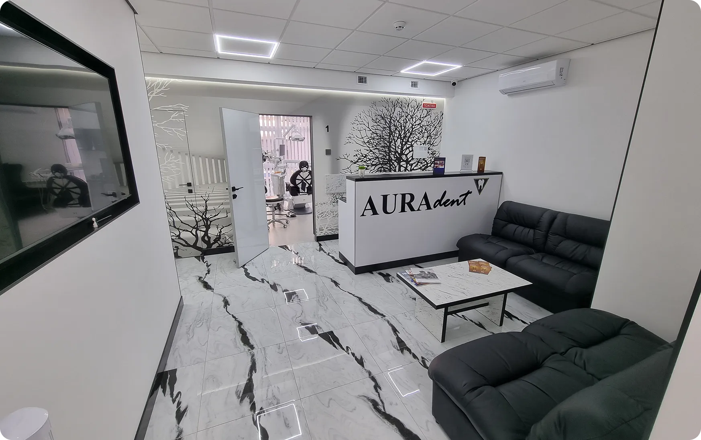
Ми розуміємо, що візит до стоматолога може викликати хвилювання. Саме тому наша мета - створити спокійну, затишну атмосферу, де ви почуватиметесь комфортно і впевнено.
Для нас важливо не просто лікувати зуби, а будувати міцну довіру. Ми щиро дякуємо, що обираєте нас, і робимо все, щоб кожен візит залишав лише приємні та теплі враження.
Дізнатись більше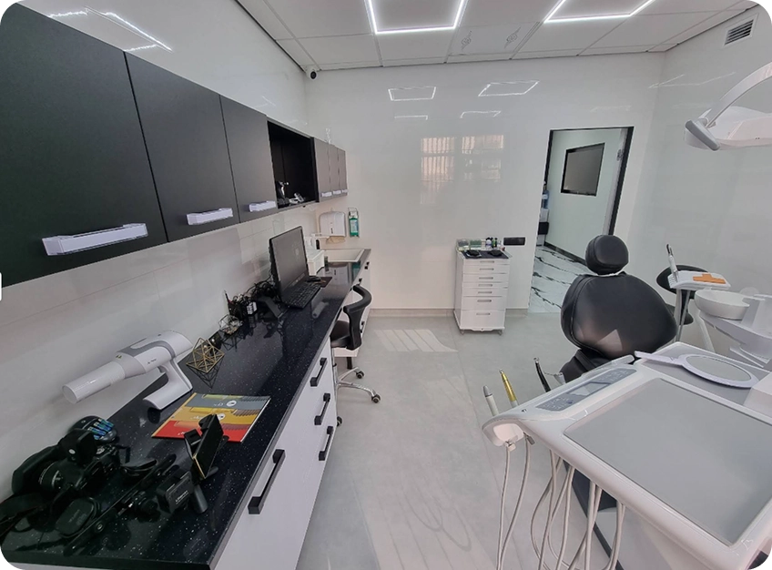
Послуги, які дарують здоров’я та комфорт
-
01.
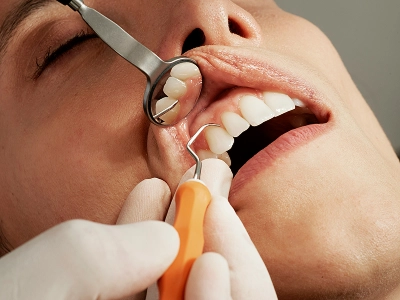
ПРОФІЛАКТИЧНА СТОМАТОЛОГІЯ
Професійна чистка, гігієна, фторування — усе для запобігання захворюванням зубів і ясен.
-
02.
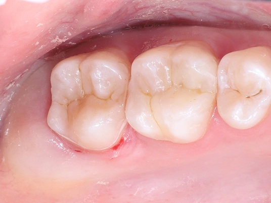
Терапевтична стоматологія
Лікування карієсу, пломбування та ендодонтична терапія - усе, щоб зберегти ваші зуби здоровими.
-
03.
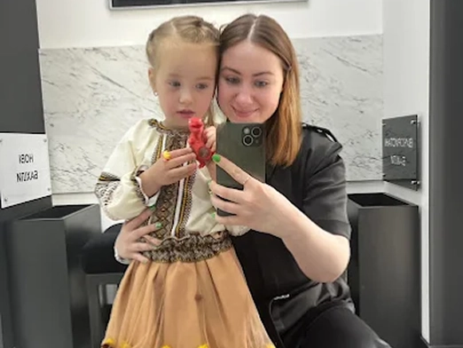
Дитяча стоматологія
Турбота про молочні та постійні зуби дітей, своєчасне лікування карієсу та профілактика для здорової усмішки.
-
04.
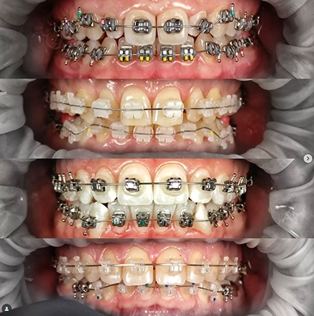
Ортодонтія
Виправлення прикусу за допомогою брекетів та елайнерів - для рівної й гармонійної посмішки.
-
05.
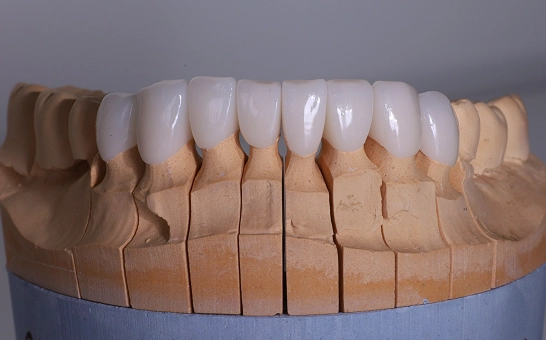
Ортопедія
Протезування зубів: коронки, мости, знімні та незнімні конструкції для відновлення функції та естетики.
-
06.
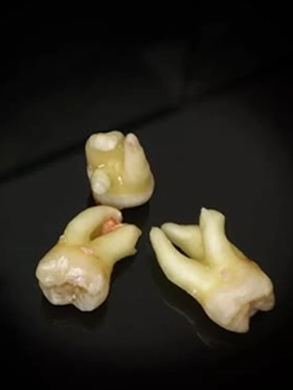
Хірургія
Видалення зубів, пластика ясен, підготовка до імплантації - швидко і акуратно.
-
07.
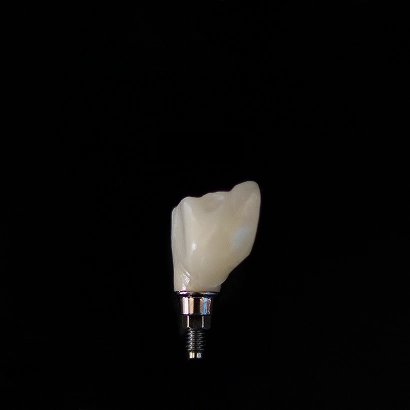
Імплантологія
Встановлення зубних імплантів - надійна заміна втрачених зубів без дискомфорту.
Сила нашої клініки - в команді
Сніжко Владислав Олександрович
“Постійне вдосконалення та відданість роботі спонукають мене виконувати свою справу на найвищому рівні. Я люблю контролювати кожен етап лікування не лише своїх пацієнтів, а й пацієнтів інших лікарів. Бачити задоволеного пацієнта для мене - головний стимул працювати та постійно вдосконалюватися.”
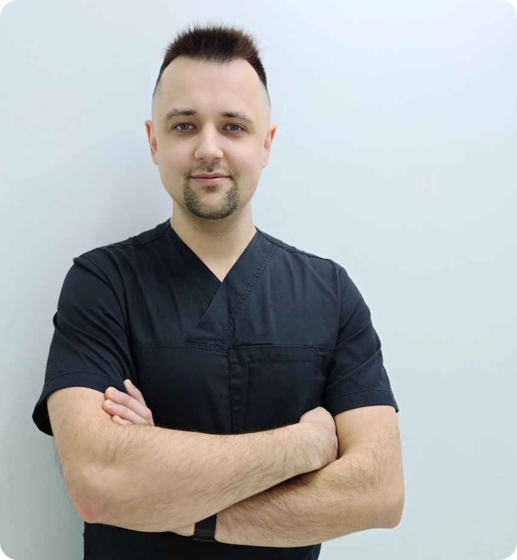
Приклади моїх робіт
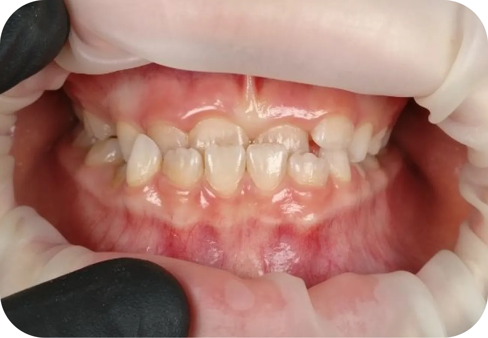
До Після
Після
Імплантація в ділянці зуба 46 зуба.
Лікар: Сніжко Владислав Олександрович
Лясковець Марія Юріївна
Напрями роботи: пародонтологія, хірургічна пародонтологія, імплантація, аугментація кісткової тканини, видалення зубів, клінічне видовження зубів
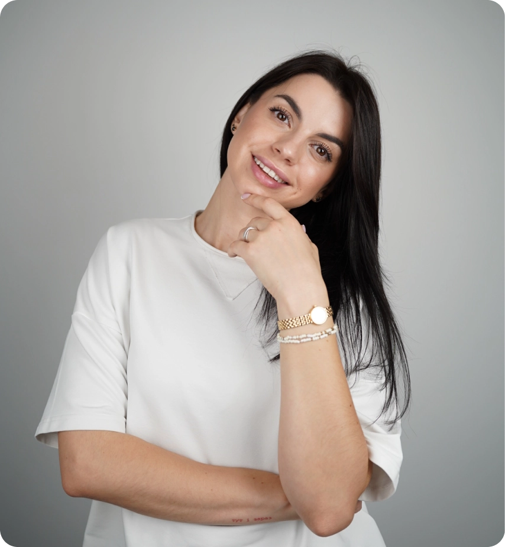
Мороз Євген Миколайович
«Для мене стоматологія - це не лише про зуби, а про впевненість, комфорт і якість життя. Як лікар, я прагну не просто вилікувати, а відновити гармонію усмішки - щоб людина могла вільно говорити, сміятися й жити без болю та страху. Мій пріоритет - здоров’я, естетика і довіра, яка народжується під час лікування.»
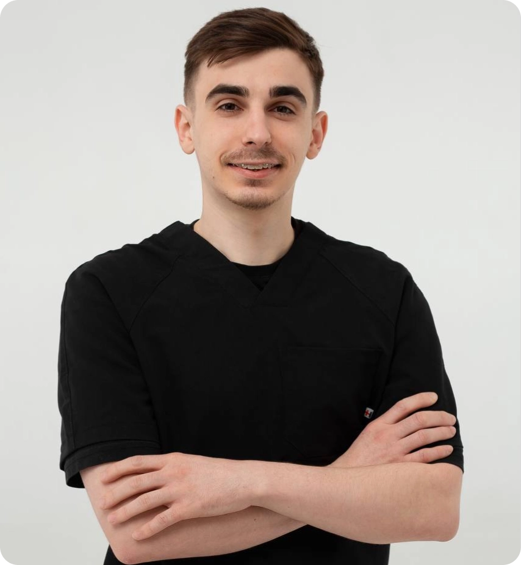
Наші результати говорять самі за себе
Відповіді на ваші найпоширеніші питання
Яка вартість пломби?
Яка вартість професійної гігієни?
Чи можна у вас відбілювати зуби?
Чи лікуєте зуби дітям?
Яка вартість видалення молочного зуба?
Чи ставите ви брекети?
Яка вартість видалення зубів мудрості?
Чи встановлюєте імпланти?
Чи проводите лікування під садацією?
Як розраховується вартість лікування?
Відгуки наших пацієнтів
Будемо раді бачити вас на прийомі
Дякуємо, що обрали нашу клініку.
Ми вже отримали вашу заявку! Найближчим часом адміністратор
зателефонує, щоб уточнити деталі візиту.